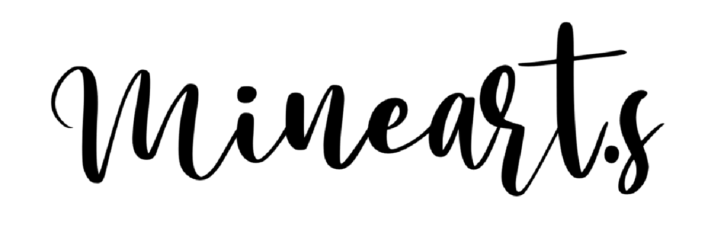
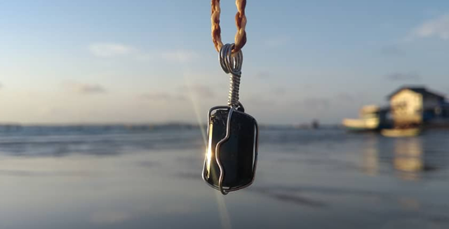
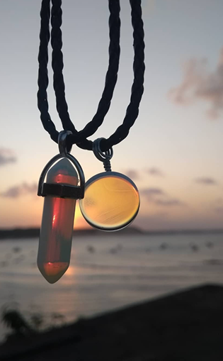
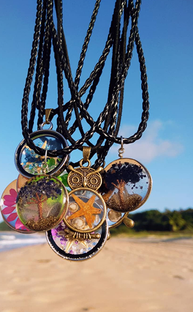

Conheça o Mineart.s
O

surgiu em 2019, na cidade de Baía Formosa/RN, como um empreendimento focado em acessórios artesanais que utilizam minerais (naturais e artificiais) em suas peças.Com uma atenção mais voltada a moda praia, os artigos carregam cuidado e uma expressão que pertence ao litoral, mas não somente.
O empreendimento também busca trazer artigos Geeks (animes, jogos e séries) e recentemente (2026) começa a trabalhar com peças feitas em crochê, sempre com a intenção de trazer o melhor, com um atendimento que busca ser empático e ágil.


